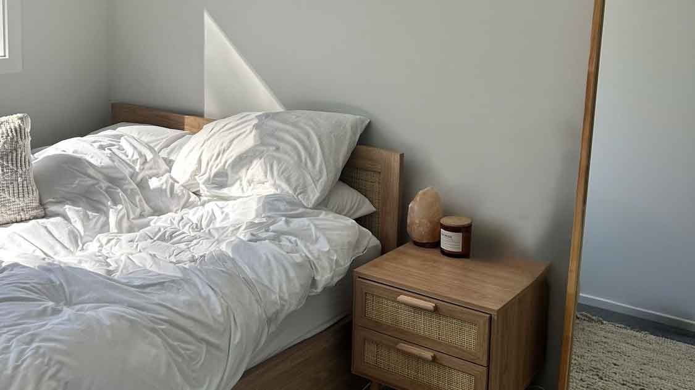
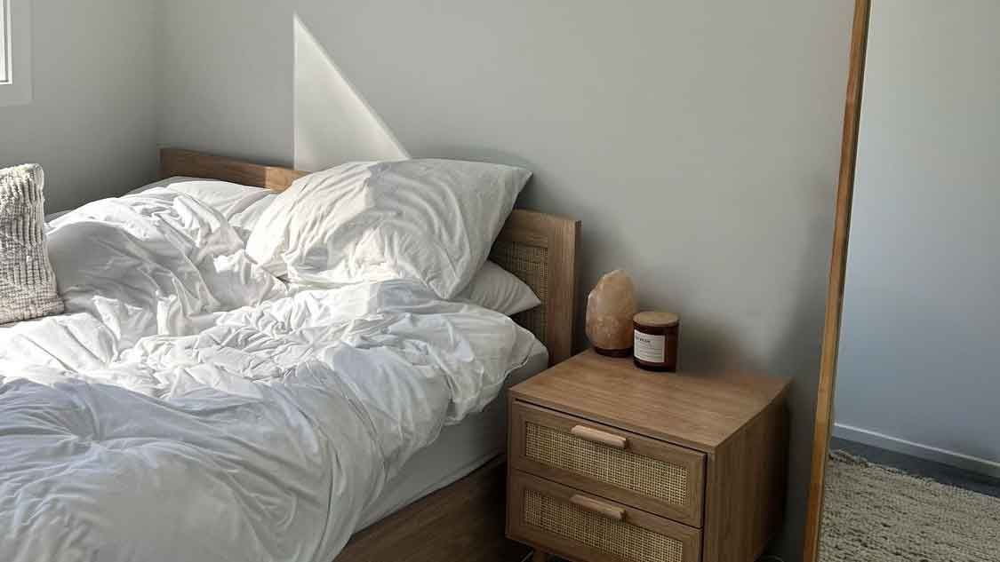

Reflection
As much as I admire complicated, dramatic interiors, I love simplicity and the idea of how you can find comfort even in simple things. The original image contains just a plain wall and the light that illuminates the room, but I reflected it through warmth. I wanted to show that something can be worth noting even in simple, tiny details of our everyday life. When I saw the initial image, I remembered the room from my countryside house that had the exact same ceiling light, which also awoke nostalgic feelings. It's funny how tiny things can remind you of your experiences.
The illustrated version reminds me of a scene from a cartoon, where a character enters the room, lights the bulb, and the camera points to the exact spot of the light, in a 16:9 frame. I imported the original image into Adobe Illustrator. I created layers for each subject, such as wall, bulb, socket, filament, and the shadow. I used a rectangle shape for the wall, and then started building the bulb itself. Two shapes I used were an ellipse and a rectangle. After putting everything in place, I lowered the opacity of the shadow, and I chose three colors from the triad palette to represent the contrast and harmony, which I also used in my second, optional illustration. In the second illustration, I mainly focused on shapes by removing the textures, details, and the balance between light and comfort.